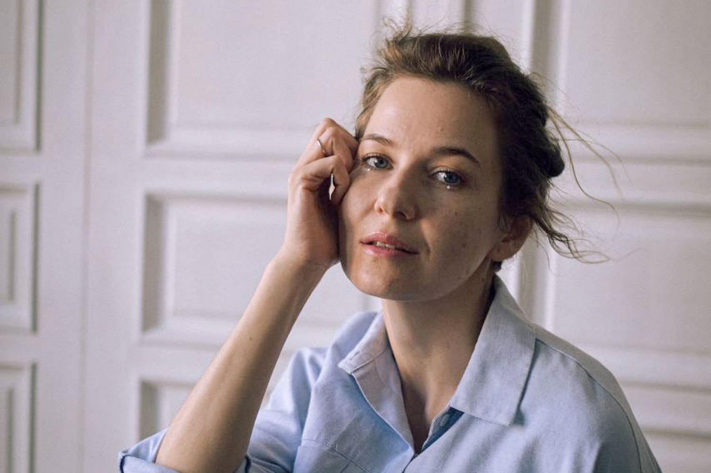

«Адвокат детской креативности» — графический дизайнер, иллюстратор, художница и педагог визуальных искусств. И невероятная мама.

Я верю, что даже если ты не нарисуешь, не сделаешь, как кто-то, то никто никогда не сделает, как ты. Каждый из нас уникален, и может свободно проявляться. Творческое мышление и уверенность в себе — важнейшие soft skills для человека любого возраста.
Варя создаёт пространства, где творчество живёт без оценок и шаблонов — для детей, подростков и взрослых, в разных странах и форматах.
Соосновательница детской студии архитектуры и дизайна — место, где дети учатся думать как создатели пространств и форм.
studiofasad.com →Куратор подростковых образовательных программ и педагог визуальных искусств в одной из ведущих дизайн-школ.
Профиль на сайте БВШД →Авторское пространство в Тель-Авиве, где можно творить во все стороны и во всех техниках сразу — ради того, чтобы дать идее жить.
Авторский курс по вышивке «Как вышить в современном мире» — про удовольствие, отдых для головы и способ замедляться через стежки.
re-create.art →Иллюстрации к книге — одна из работ Вари как художницы и иллюстратора. Сочетание текстуры, света и характера, узнаваемое в каждом штрихе.
Посмотреть на OZON →Спикер и ведущий профильных конференций и мероприятий о детском творчестве, образовании в дизайне и визуальных искусствах.
Варя ведёт творческие занятия в лучших детских лагерях по всему миру — от Камчатки до Индонезии.
Создательница и со-ведущая подкаста — разговоры с женщинами о творчестве, материнстве, профессии и жизни.
Слушать на Apple PodcastsПрисоединяйтесь к курсу по вышивке — и творите свободно, в своём темпе и в своей эстетике
На курс по вышивке